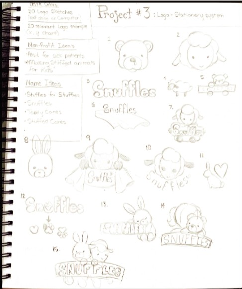
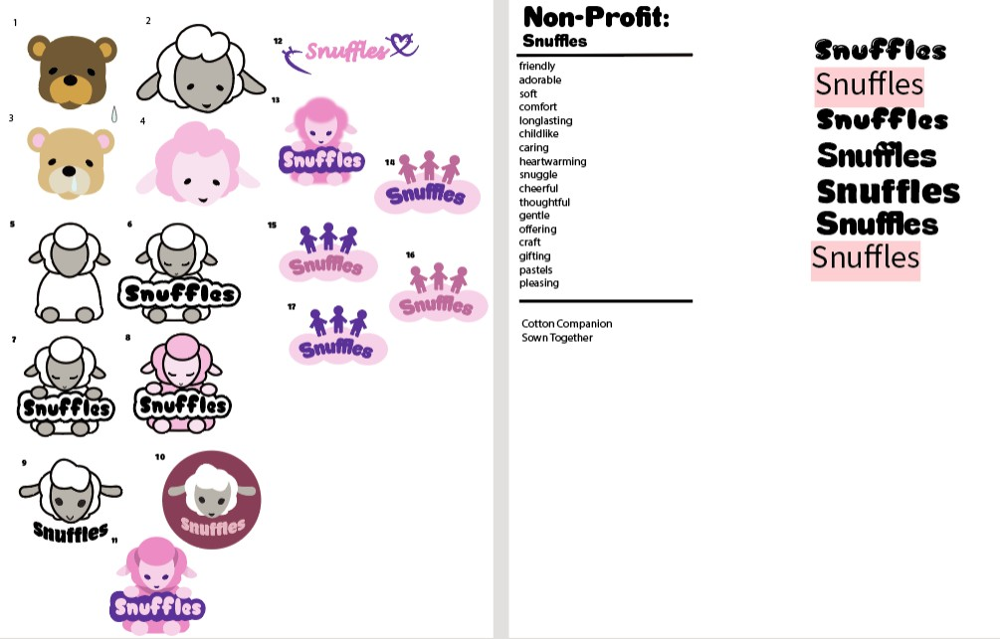
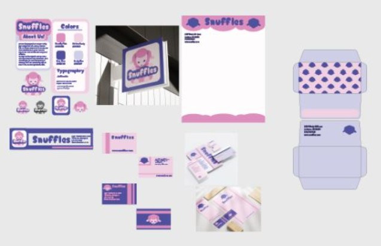

Non-Profit Organization
Snuffles was a nonprofit that I had to make up for this assignment. Of course there were many steps leading up to creating the nonprofit and it starts with brainstorming. I liked the idea of making a nonprofit that would take donations and make stuffed animals or soft toys for kids that either didn't have them, or those that could just use a soft friend if they were in the hospital.


I did most all my deisgns for this on Illustrator but moved to Photoshop and Indesign when making the mockups and placing them in a layout. The soft pastels are meant to be a color sheme that was appealing to a much younger audience, and the theme of course was stuffled animals. It does come off as very cutesy and I am aware of that, but again, the target audience were children.
